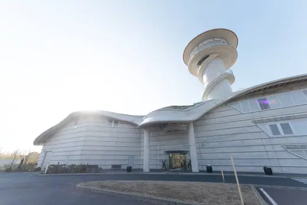
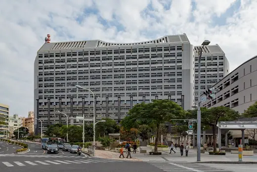

Kisho Kurokawa buildings 17
Sort
 Nakagin Capsule Tower1972 · Tokyo
Nakagin Capsule Tower1972 · Tokyo National Bunraku Theatre1983 · Osaka
National Bunraku Theatre1983 · Osaka Hiroshima City Museum of Contemporary Art1988 · Hiroshima
Hiroshima City Museum of Contemporary Art1988 · Hiroshima Ehime Prefectural Science Museum1994 · Niihama
Ehime Prefectural Science Museum1994 · Niihama Fukui Prefectural Dinosaur Museum2000 · Katsuyama
Fukui Prefectural Dinosaur Museum2000 · Katsuyama Toyota Stadium2001 · Toyota
Toyota Stadium2001 · Toyota National Art Center, Tokyo2007 · Tokyo
National Art Center, Tokyo2007 · Tokyo
Iki City Ikikoku Museum2010 · Iki National Museum of Ethnology1977 · Suita
National Museum of Ethnology1977 · Suita Museum of Modern Art, Saitama1982 · Saitama
Museum of Modern Art, Saitama1982 · Saitama Nagoya City Art Museum1987 · Nagoya
Nagoya City Art Museum1987 · Nagoya
Okinawa Prefecture Government Building1990 · Naha Irie Taikichi Memorial Museum of Photography1992 · Nara
Irie Taikichi Memorial Museum of Photography1992 · Nara Kuala Lumpur International Airport1998 · Sepang
Kuala Lumpur International Airport1998 · Sepang Osaka International Convention Center (Grand Cube Osaka)2000 · Osaka
Osaka International Convention Center (Grand Cube Osaka)2000 · Osaka Nagasaki Museum of History and Culture2005 · Nagasaki
Nagasaki Museum of History and Culture2005 · Nagasaki Singapore Flyer2008 · Singapore
Singapore Flyer2008 · Singapore